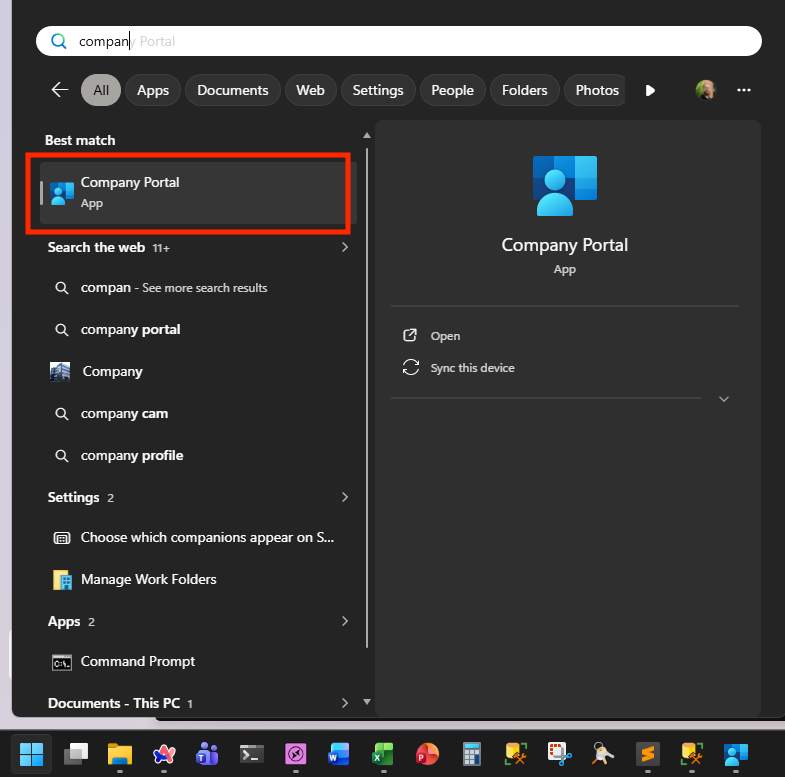
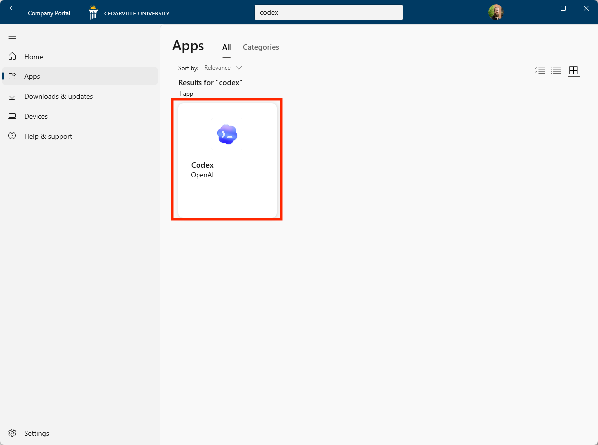
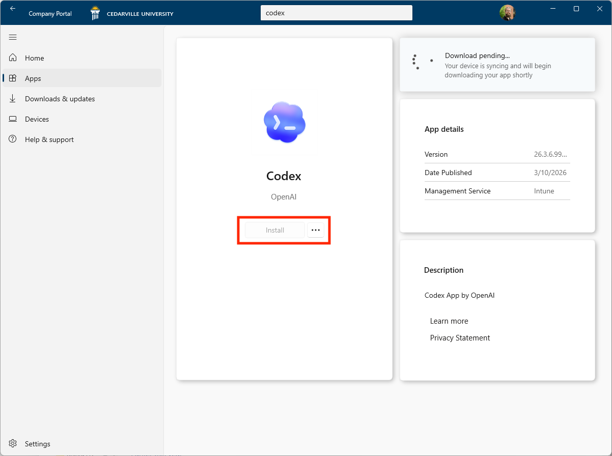
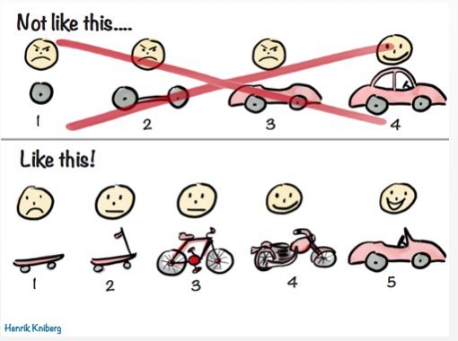
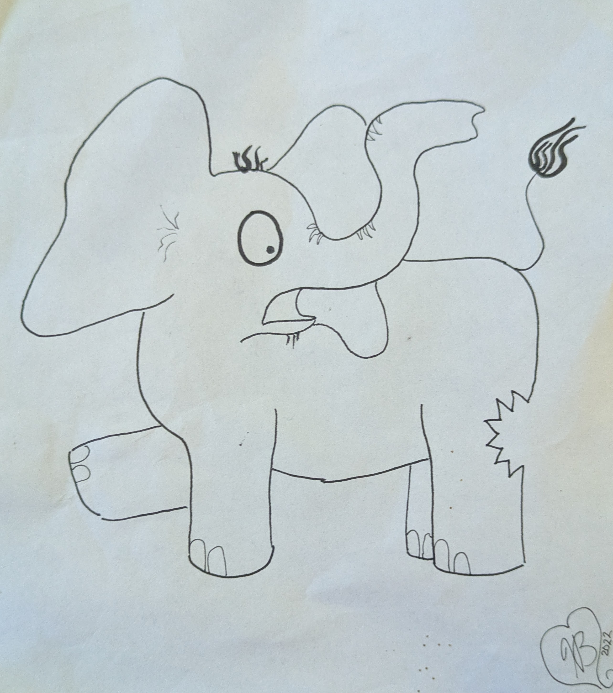

Installing Codex
Windows
- Start Menu → Company Portal
- Search “Codex” → Click Codex
- Click Install and wait—it’ll finish on its own
macOS
developers.openai.com
/codex/quickstart
- Download the Codex app
- Use Make Me Admin in CedarNet 2.0 to become admin
- Drag the app into your Applications folder



Give Codex a Home
Codex works out of a folder on your computer. Keep your projects organized from the start.
Suggested location
C:\Users\yourusername\Codex\project-name
Avoid OneDrive folders. Codex creates a lot of small files quickly—OneDrive will try to sync all of them and cause problems. Keep your Codex projects somewhere local.
Codex Raids Your Toolbox
Stuff will scroll by—that’s normal. You don’t need to understand every line.
Codex can also install its own tools—if you give it permission.
More tools on your machine = more Codex can do.
Credits: What Counts?
Uses Credits
- Messages sent to Codex
Does not use Credits
- Viewing what it’s made
- Publishing to GitHub
- Running programs it created
Credit Limit
~300
messages every 5 hours
Hitting the limit often?
Come talk to us.
Prompting Codex
- Skip the pleasantries
- Be direct and specific—but not wordy
- Be the boss
When It Gets Off Track
Sometimes Codex wanders. Try these:
- Treat it like a student: “What problem are you running into?”
- Stuck planning: “Go ahead and implement.”
- Stuck in a loop: “Try a different approach.”
Codex is an Extension of You
You’re the one with the vision—Codex writes the code.
- If it’s dumber than you—great! Tell it exactly what you want.
- If it’s smarter than you—hitch a ride.
Playground Rules
What you learned in kindergarten still applies.
-
Keep your hands to yourself
If it’s not yours to touch, it’s not Codex’s either.
-
Ask before you touch
Don’t use Codex to wander into someone else’s work uninvited.
-
Take turns
Not everyone will adopt at the same pace.
“Seek first to understand, then to be understood.” —Stephen Covey
Chesterton’s Fence: don’t remove what you don’t understand yet.
Iteration
- Don’t accept the first effort—unless it’s great!
- Tell Codex specifically what’s wrong
- Get something working, then improve it


Homework Due
In our original Codex session we gave some assignments:
- How many things are on your “sigh list”?
- Where would you like to start today?
Writing Your First Codex Prompt
- Context — a folder on your computer
- Platform — what tools to use
- Task — what you want it to do, as specific as possible
Example prompt
“Using ‘chapter3.pptx’ in this folder, create an interactive webpage in HTML5 and JS to teach and illustrate the 7 basic levels of taxonomy.”
Publishing to GitHub Pages
1
Sign up for GitHub
Go to github.com and create an account. Signing in with Google is recommended.
2
Create a Repository
Click + → New repository. Give it a name and set it to Public.
3
Upload Your Files
Click Add file → Upload files and drag in your index.html and any assets.
4
Publish to Pages
Settings → Pages → Branch: main → Save. Your site goes live at username.github.io/repo-name
Heads up: anything you publish to GitHub Pages is publicly accessible on the internet. Don’t publish sensitive data or files you wouldn’t share openly.
A Few of Codex’s Favorite Tools
Git
Tracks every change to your files—like a detailed undo history for your entire project.
GitHub
Stores your Git projects in the cloud—backed up, shareable, and accessible anywhere.
Node.js
Lets Codex run JavaScript on your machine—powers most web tools and automation scripts.
Python
A general-purpose language great for data, automation, and gluing things together.
PowerShell
Windows’ built-in scripting tool—lets Codex automate tasks, move files, and talk to your system.
npm
A massive library of free code packages—Codex can pull in tools built by millions of developers.
Glossary
Repository
A project folder tracked by Git—contains your code and its full history.
Branch
A parallel version of your project—lets you experiment without touching the working original.
Token
How Codex measures text—roughly a word or part of a word. Credits are spent in tokens.
Context Window
Everything Codex can “see” at once—files, history, instructions. Outside it, Codex is blind.
Terminal
The text-based window Codex uses to run commands—the stuff that scrolls by.
Dependency
Outside code your project relies on. Codex manages these so you don’t have to.